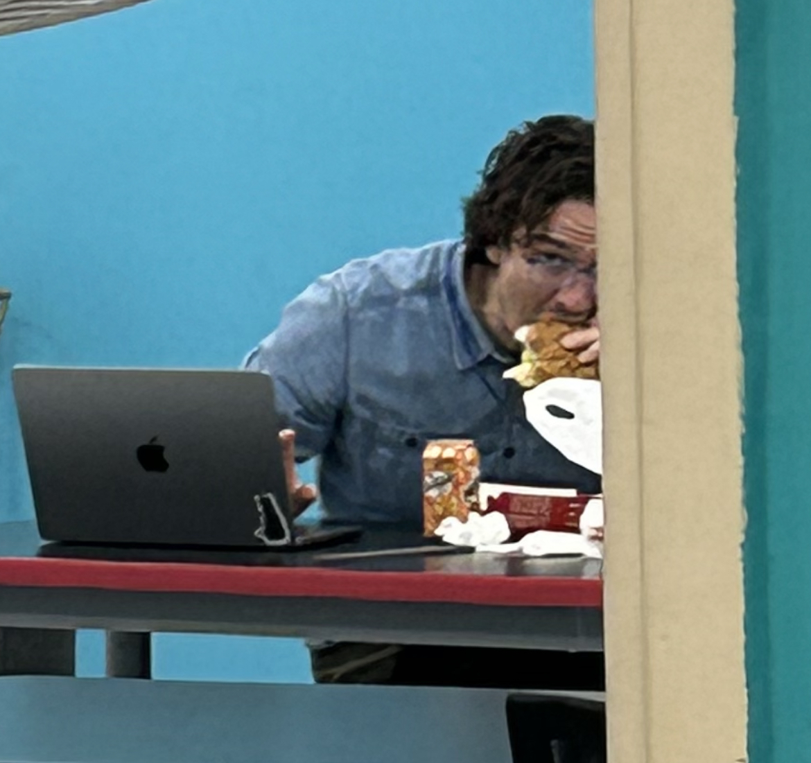

WHO IS BOWMAN?

Mr. Bowman is a teacher with many years of experience. Additionally, he is a famous rapper and is best friends with Drake. They are currently working on a new song about his favorite students: Zain, Sima, and Lucas. They are his favorite students because they are funny, amazing, great and fantastic. Here are some things that Mr. Bowman has done:
- He holds the record for the fastest climb of Mount Everest
- Nobel prize winner - he won it because broke up a fight between Lucas and Dwayne Johnson and prevented Lucas from getting crushed
- Scuba dived in undiscovered parts of the ocean
- Founded a new type of fish: philbowfish
- Rubber ducky enthusiast
- Has a hot sauce collection
- Invented the color fulvous and it is his favorite color
- Kanye West is his cousin
- Won an olympic medal in gymnastics
- 10 consecutive year winner of the world famous spelling competition
- His restaurant has 3 michelin stars